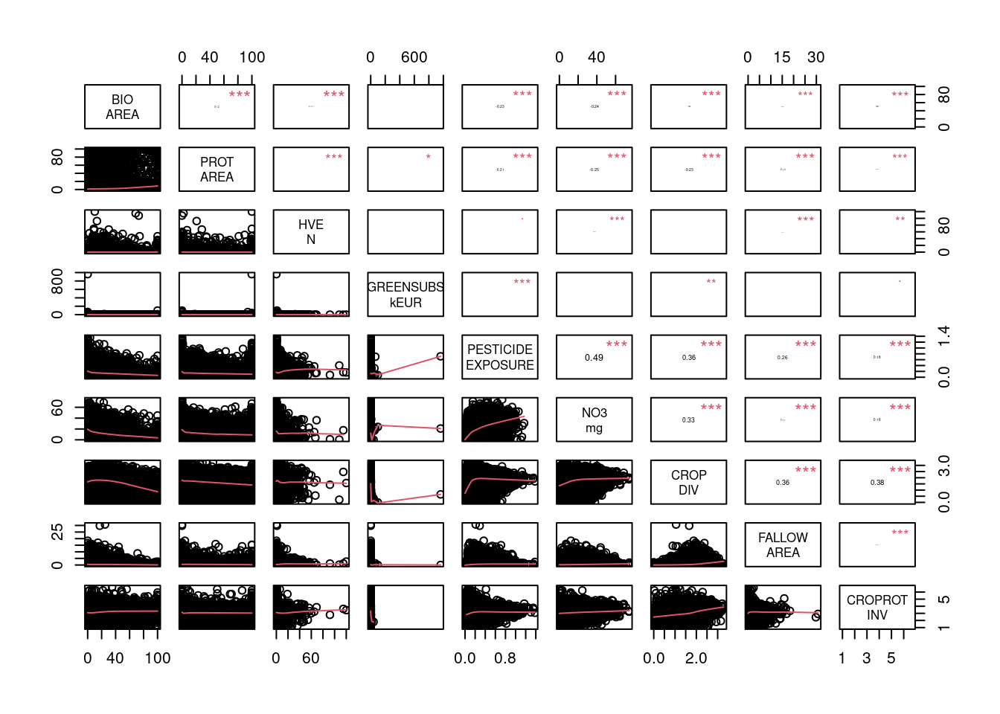
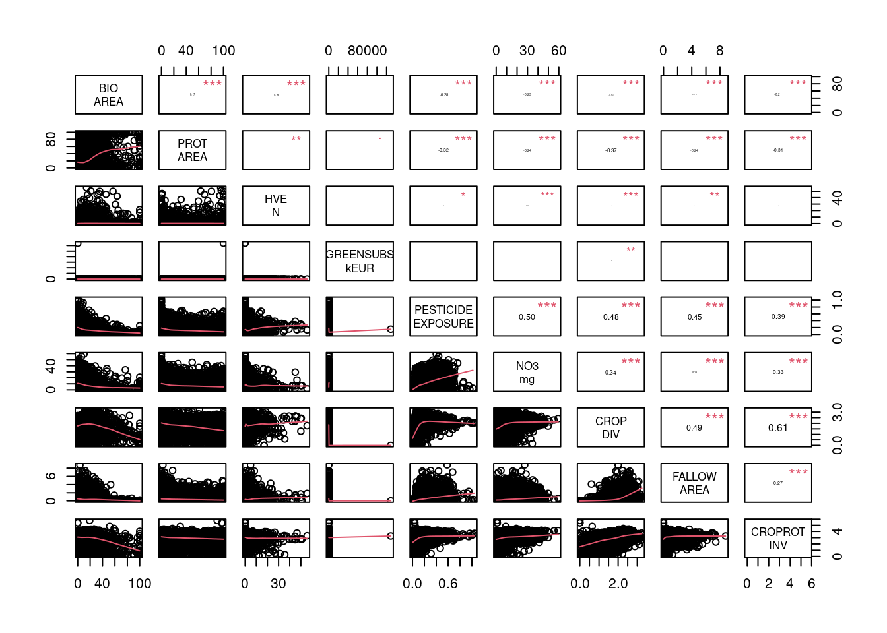
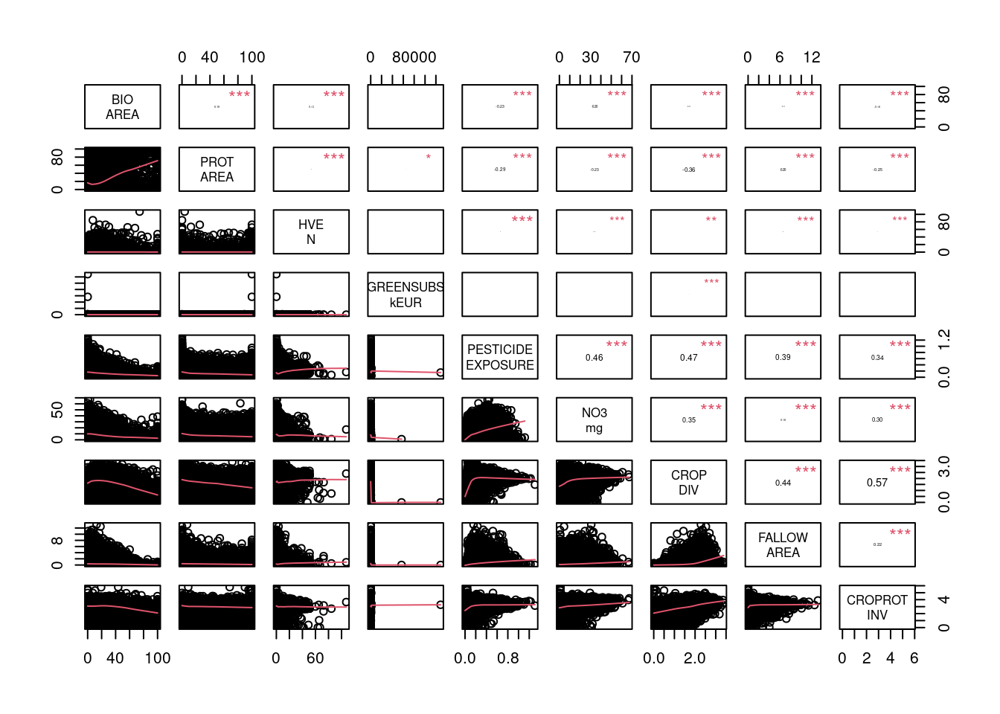
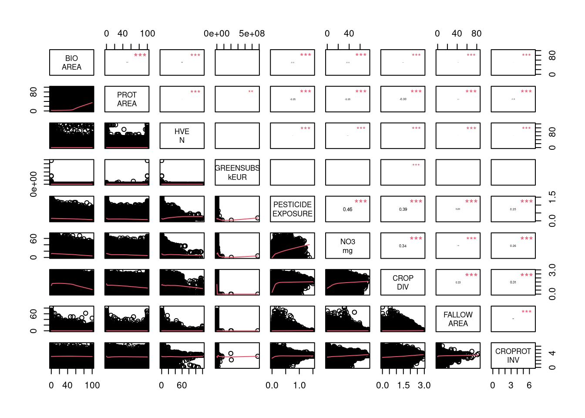

| Name | Description | Year | Unit | Source |
|---|---|---|---|---|
| BIO_AREA_PCT_2024 | percentage of organic farming over the total cultivated area (CULTIVATED_AREA_HA) | 2024 | % | Cartobio + RPG |
| PROT_AREA_PCT_2026 | Percentage of protected area relative to the area of the spatial unit | 2026 | % | WDPA |
| HVE_N_2024 | number of ‘high environmental certified’ | 2024 | NA | MASA |
| GREENSUBS_kEUR_per_HA_2022 | subsidies per cultivated area | 2022 | kEUR/ha | Telepac |
| PESTICIDE_EXPOSURE_2022 | Combined exposure in toxic, carcinogenic, mutagenic, reprotoxic active substances from the scaled concentrations in air and water and treatment intensity index, designed to vary between 0 and 3 (historical data between 0 and 1.5) | 2022 | NA | Rigal and Perrot 2025 |
| NO3_mg_per_l_2025 | Average nitrate level measured in drinking water distribution of municipalities | 2025 | mg/l | EauPotable |
| CROP_DIV_SHANNON_2023 | Shannon index calculated with all RPG classes | 2023 | NA | RPG |
| CROP_DOMINANT_2023 | Dominant crop by municipality in term of surface area | 2023 | NA | RPG |
| FALLOW_AREA_PCT_2023 | % of fallow relative to the total area of the municipality | 2023 | % | RPG |
| CROPROT_INV_SIM_1523 | Inverse Simpson index of crop rotation diversity | 2015-2023 | NA | RPG successions |
Summary of the political stringency variables
Introduction
The objective of this document is to explore the current state of indicators on political stringency in France.
Calculated indicators
Full indicator tables is stored in Github
Overall correlation




Missing data
| NAs_Commune | NA_perc_Commune | NAs_Maille_10km | NA_perc_Maille_10km | NAs_Maille_5km | NA_perc_Maille_5km | NAs_Maille_1km | NA_perc_Maille_1km | |
|---|---|---|---|---|---|---|---|---|
| BIO_AREA_PCT_2024 | 232 | 0.7 | 79 | 1.3 | 405 | 1.8 | 46381 | 8.4 |
| PROT_AREA_PCT_2026 | 0 | 0.0 | 0 | 0.0 | 0 | 0.0 | 0 | 0.0 |
| HVE_N_2024 | 0 | 0.0 | 0 | 0.0 | 1 | 0.0 | 59 | 0.0 |
| GREENSUBS_kEUR_per_HA_2022 | 264 | 0.8 | 80 | 1.4 | 430 | 1.9 | 47376 | 8.5 |
| PESTICIDE_EXPOSURE_2022 | 1 | 0.0 | 21 | 0.4 | 97 | 0.4 | 1778 | 0.3 |
| NO3_mg_per_l_2025 | 13490 | 38.8 | 132 | 2.2 | 1617 | 7.1 | 119782 | 21.6 |
| CROP_DIV_SHANNON_2023 | 264 | 0.8 | 80 | 1.4 | 430 | 1.9 | 47374 | 8.5 |
| CROP_DOMINANT_2023 | 264 | 0.8 | 80 | 1.4 | 430 | 1.9 | 47374 | 8.5 |
| FALLOW_AREA_PCT_2023 | 0 | 0.0 | 0 | 0.0 | 0 | 0.0 | 0 | 0.0 |
| CROPROT_INV_SIM_1523 | 2793 | 8.0 | 172 | 2.9 | 969 | 4.2 | 41067 | 7.4 |
Maps
Visit https://rfrelat-cesab.shinyapps.io/Motiver_megatrends/ to see the spatial distribution of the indicators.